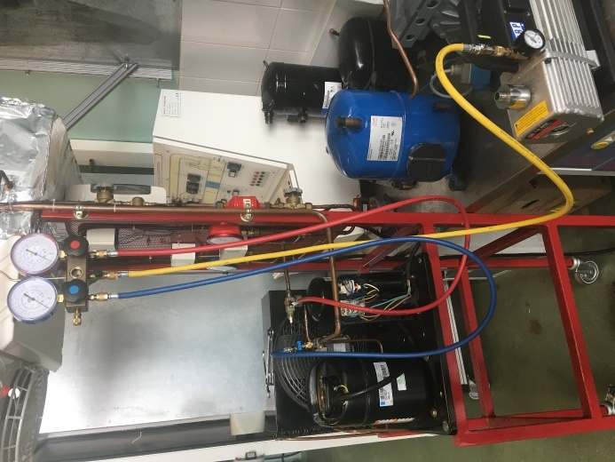
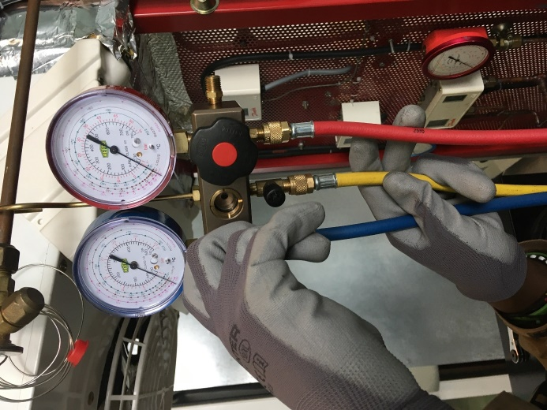
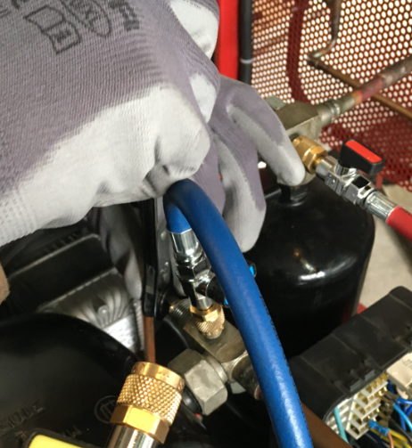

Ordre d'intervention n° OI-S7-1 : l'étanchéité de la chambre froide de l'arrière-boutique a été
prouvée au PV le mois dernier (S6). Il faut maintenant préparer la mise en service : sur le
groupe de production de froid de l'atelier, vous devez poser le manifold, brancher les manomètres
HP et BP, lire les pressions et les reporter sur une feuille de mise en service. La charge en
fluide frigorigène elle-même n'arrive qu'en S8 (simulée) : aujourd'hui, vous observez et vous lisez,
vous ne touchez pas au fluide. Passage 1 en semaine 22 (découverte guidée), passage 2 en semaine 23
(consolidation, plus d'autonomie).

Un manifold posé sur un groupe : le corps porte deux manomètres (bleu à
gauche = BP, rouge à droite = HP) et se raccorde par trois flexibles — rouge (HP), bleu (BP), jaune
(service). D'après : photographies de poste, S5S1 Pose manifold et tirage au vide (document professeur).
Ce qui change depuis S6 — En S6, vous éprouviez un montage sans
fluide frigorigène (azote seul, montage vide). Aujourd'hui, la machine est EN CHARGE : elle
fonctionne réellement avec du fluide frigorigène à l'intérieur. C'est pourquoi la supervision directe du
professeur, détenteur de l'attestation d'aptitude, est permanente pendant toute manipulation du manifold,
pourquoi les purges restent toujours brèves, et pourquoi vous ne desserrez jamais un flexible
sous pression. Vous ne manipulez pas le fluide lui-même (aucune charge, aucune récupération — cela
reste pour S8 puis la 2e année) : votre rôle aujourd'hui est de poser, lire, déposer.
Passage 1 / Passage 2 — ce qui change
Passage 1 (semaine 22) — découverte guidée : vous reconstituez en binôme, pour la première fois, la
procédure de pose à partir des cartes-étapes mélangées ; vous la faites valider avant d'agir. Une seule
lecture de pressions, à la fin de l'installation. Passage 2 (semaine 23) — consolidation, plus d'autonomie : vous reconstituez la même procédure, plus
vite et avec moins d'aide (vous l'avez déjà vécue). Vous lisez les pressions à deux moments — à la
mise en régime, puis après quelques minutes de fonctionnement stabilisé — pour observer si elles évoluent, et
vous concluez sur la cohérence de vos lectures avec la réglette P/T.
Tâches
T11 Contrôler les circuits hors fonctionnement T12 Respecter les consignes de sécurité et protéger la zone de travail T15 Renseigner les documents de mise en service découverte
Rigueur du geste (serrage à la main, jamais forcé) · acceptation immédiate de la supervision sur machine en charge · honnêteté de la lecture · autonomie croissante (passage 2)
Compétences (≤ 4)
Découverte → ConfortementC4.7 Raccorder les équipements de charge, de mesure et de contrôle Confortement → vers MaîtriseC4.5 Mesurer, comparer des grandeurs
Objectifs — je serai capable de…
reconstituer la procédure de pose du manifold à partir des cartes-étapes mélangées, et la faire
valider avant d'agir ;
brancher les manomètres sur la machine — repère HP rouge / BP bleu — en suivant la
procédure validée, serrage à la main uniquement ;
purger brièvement chaque flexible avant le serrage définitif ;
lire les pressions HP et BP et les reporter, avec la température de réglette
correspondante, sur une feuille de relevés ;
reconstituer et exécuter la dépose, proprement, dans le même esprit que la pose.
Prérequis — je sais déjà…
Ce n'est pas votre première fois devant un montage brasé sous pression :
vous l'avez éprouvé en S5/S6. Aujourd'hui, on ajoute un instrument nouveau — le manifold — sur une machine
qui, cette fois, fonctionne réellement :
lire la relation pression/température sur la réglette (S4) ;
les réseaux fluidiques de base : flexibles, raccords, vannes (S5.5) ;
le montage de l'arrière-boutique a été brasé et son étanchéité prouvée au PV (S5/S6) ;
agir sous supervision directe du professeur sur un montage sous pression (S5/S6) ;
É3 est passée : votre plan de progrès personnel s'applique aussi ici, en particulier sur la
rigueur du geste et l'honnêteté de la lecture.
Si la lecture de la réglette P/T vous échappe
encore, dites-le au professeur avant de commencer : c'est exactement ce que reprend la phase 4 de ce module.
Matériel (par binôme, aux deux passages)
Un manifold à deux manomètres (HP à droite, cadran rouge ; BP à gauche, cadran bleu) et ses trois
flexibles (rouge, bleu, jaune)
La machine du poste, en charge, en fonctionnement — manipulée uniquement sous supervision
directe du professeur
Le jeu de cartes-étapes mélangées (pose, puis dépose) — en annexe de ce document
Clé plate ou clé à cliquet, pour un serrage de finition à la main uniquement sur les raccords de flexibles
La réglette P/T du fluide de la machine (S4)
Document ressource fourni : table pression/température (P/T) du fluide de votre banc — voir le kit ressources élève.
Feuille de relevés de mise en service (en annexe de ce document) + stylo
Lunettes de protection + gants anti-brûlure froide (× 1 par élève, obligatoires pendant toute manipulation)
Une machine « en charge » contient du fluide frigorigène, sous pression,
en fonctionnement réel. Le contact accidentel avec du fluide qui s'échappe provoque une brûlure froide
(comme une brûlure thermique, mais par le froid intense de la détente). C'est pourquoi le professeur, seul
détenteur de l'attestation d'aptitude, reste présent en permanence pendant toute manipulation du
manifold — même au passage 2, où vous gagnez en autonomie sur le geste et la lecture, jamais sur la
supervision. Vous ne réalisez aucune charge, aucune récupération de fluide ce module : cela reste pour
S8 (simulé) puis la 2e année.
Risque
Parade
Contact avec du fluide frigorigène qui s'échappe (brûlure froide)
Gants anti-brûlure froide et lunettes de protection obligatoires pendant toute manipulation du manifold.
Flexible ou raccord qui lâche sous pression
Serrage à la main uniquement (jamais forcé à la clé) ; contrôle visuel des joints avant raccordement.
Desserrage d'un raccord encore sous pression
Toujours purger brièvement avant de débrancher un flexible — jamais desserrer un raccord sous pression.
Ouverture accidentelle du circuit frigorifique
Jamais ouvrir le circuit lui-même : on pose et on dépose le manifold sur les vannes de service prévues, rien d'autre.
Émission de fluide frigorigène dans l'atmosphère lors des purges
Purge toujours brève : quelques secondes, juste ce qu'il faut pour chasser l'air du flexible — jamais un dégazage prolongé (esprit F-Gas : on limite les émissions).
Relevé de pression inventé ou recopié d'un autre poste
La feuille de relevés se remplit au moment de la lecture réelle, jamais après coup ni copiée sur un camarade.
La logique de la procédure à remettre en ordre — comprendre avant d'agir
1. Vous recevez un jeu de cartes-étapes MÉLANGÉES (annexe pleine page) : chaque carte décrit un geste
de la pose (ou, plus tard, de la dépose).
2. En binôme, vous discutez et reconstituez l'ordre qui vous semble logique et sûr — sans toucher
encore à la machine.
3. Vous faites valider votre ordre par le professeur avant toute manipulation.
4. Une fois validé, vous exécutez votre propre procédure, geste après geste, sous supervision directe.
5. La dépose suit exactement le même principe : un nouveau jeu de cartes, à reconstituer avant
d'exécuter.
Pourquoi comprendre avant d'exécuter ? Sur une
machine en charge, un geste fait dans le mauvais ordre peut être dangereux (contact avec du fluide) ou
simplement inefficace (rien à lire, flexible mal purgé). Reconstituer la procédure, c'est déjà commencer à la
comprendre.
La convention de couleurs — à connaître par cœur
Le manifold porte toujours deux couleurs : bleu = BP (basse pression),
rouge = HP (haute pression). Le flexible central, jaune, sert au raccordement de service
(utilisé pour le tirage au vide en S7-F2). D'après : photographie produit, documents professeur pose de
manomètres.
Gestes interdits
Jamais desserrer un flexible sous pression sans l'avoir purgé au préalable ;
Jamais ouvrir le circuit frigorifique lui-même ;
Jamais forcer un raccord à la clé — serrage à la main uniquement ;
Jamais manipuler le manifold sans la présence du professeur, y compris au passage 2 ;
Jamais un relevé de pression inventé, estimé ou recopié — seule la lecture réelle compte ;
Jamais une purge prolongée « pour être sûr » : la purge reste brève.
Avant de commencer, complétez la fiche de sécurité à cocher ci-dessous
(lunettes et gants portés, poste dégagé) et faites-la viser par le professeur.
Fiche de sécurité à cocher — document CAP, F. Henninot.
🚨 En cas d'incident — arrêtez immédiatement toute manipulation, alertez le
professeur. En cas de projection de fluide frigorigène sur la peau : rincer abondamment à l'eau tiède
(jamais chaude), ne pas frotter, alerter. La trousse de secours et l'arrêt d'urgence sont localisés en phase 5
de la séance.
Étape A — reconstituer la procédure de POSE (sans toucher à la machine)
Prenez le jeu de cartes-étapes « POSE » (annexe pleine page). Découpez-le, lisez
chaque carte à voix haute avec votre binôme, et posez les cartes dans l'ordre qui vous semble logique.
Mon ordre reconstitué (lettres des cartes, dans l'ordre) :
Visa professeur — validation de l'ordre AVANT exécution
☐ Ordre correct ☐ Ordre à corriger (indications ci-dessous) ☐ Autorisé(e) à commencer la pose
Étape B — exécuter la pose, geste après geste
☐ 1. Suivre l'ordre validé, une carte après l'autre, sans en sauter aucune
☐ 2. Sous supervision : raccorder le flexible rouge sur la prise HP
☐ 3. Sous supervision : raccorder le flexible bleu sur la prise BP
☐ 4. Serrer à la MAIN uniquement — jamais forcer à la clé
☐ 5. Purger BRIÈVEMENT chaque flexible avant le serrage définitif
☐ 6. Faire viser chaque geste par le professeur avant de passer au suivant

Le manifold se manipule avec des gants : à gauche le flexible rouge (HP), au
centre le jaune (service), à droite le bleu (BP). D'après : photographie de poste, documents professeur.
Question — agir → noter → réfléchir — Pourquoi purge-t-on le flexible
AVANT de le serrer définitivement, et pas après ?
Indice : que reste-t-il dans le flexible avant
qu'il ne soit relié au circuit, et est-ce que ça fausserait votre future lecture de pression ?
Visa professeur — jalon 1
☐ Ordre respecté sans geste sauté ☐ Raccordement HP rouge / BP bleu correct ☐ Serrage à la main uniquement ☐ Purge brève réalisée ☐ Autorisé(e) à poursuivre vers le jalon 2
Le manifold est posé, purgé, en position de lecture. Vous allez maintenant
lire les pressions, les reporter sur votre feuille de relevés, puis reconstituer et exécuter la
dépose — dans le même esprit que la pose.
Lecture des pressions
📄 Ressource fournie — table pression/température. Pour lire une température de saturation à partir d'une pression HP ou BP (ou l'inverse), utilisez la réglette P/T multi-fluides ou la table du fluide de votre banc : R134a · R404A · R410A. N'inventez jamais une valeur : lisez-la sur la table.
☐ 1. Lire la pression affichée sur le cadran rouge (HP)
☐ 2. Lire la pression affichée sur le cadran bleu (BP)
☐ 3. À l'aide de la réglette P/T du fluide de la machine, trouver la température qui correspond à
chacune des deux pressions
☐ 4. Reporter les 4 valeurs sur la feuille de relevés (annexe pleine page)
Mesure
Pression lue (bar)
Température réglette (°C)
Côté HP (cadran rouge)
Côté BP (cadran bleu)
Aucune valeur de pression n'est donnée dans
ce document : c'est votre lecture, sur votre machine, qui compte. Reportez-la ensuite telle quelle sur la
feuille de relevés en annexe.
Reconstituer et exécuter la DÉPOSE
Prenez le jeu de cartes-étapes « DÉPOSE » (même annexe). Reconstituez l'ordre en
binôme, faites-le valider, puis exécutez.
Mon ordre reconstitué pour la dépose (lettres, dans l'ordre) :
☐ 1. Faire valider par le professeur la fin de la lecture avant toute manœuvre de dépose
☐ 2. Remettre la vanne de service en position fermée, sous supervision
☐ 3. Purger BRIÈVEMENT chaque flexible avant de le débrancher — jamais sous pression
☐ 4. Débrancher les flexibles (rouge puis bleu), remettre les bouchons de protection
☐ 5. Ranger le manifold : manomètres remis à zéro, flexibles enroulés sans coude serré
Question — À votre avis, pourquoi remet-on toujours les bouchons de
protection sur les vannes de service après la dépose, même pour une courte pause entre deux postes ?
Bonne réponse attendue : les bouchons
protègent la prise de pression de la poussière et des chocs, et évitent qu'on oublie une vanne mal fermée.
⚠ Rappel — fin du passage 1 — Vous ne manipulez jamais le manifold sans le
professeur présent, même pour « juste vérifier ». Rendez-vous en semaine 23 pour le passage 2.
Visa professeur — jalon 2
☐ Lecture HP/BP réalisée et reportée ☐ Correspondance réglette cohérente ☐ Dépose reconstituée puis validée ☐ Manifold rangé, bouchons remis
PASSAGE 2 · SEMAINE 23 · JALON 1' — reconstitution rapide, plus d'autonomie — ≈ 50 min
Ce qui change par rapport au passage 1 — Vous connaissez déjà la
procédure : reconstituez-la plus vite, avec moins d'aide du professeur. Il reste présent en
permanence pour la sécurité, mais il redémontre moins et vous laisse davantage l'initiative.
Reconstituer la procédure de POSE (rappel du principe, plus vite)
Mon ordre reconstitué (lettres) :
Visa professeur — validation de l'ordre
☐ Ordre correct, reconstitué sans aide (ou avec une aide limitée à noter) ☐ Autorisé(e) à commencer
Exécuter la pose
☐ 1. Installer et raccorder le manifold — rouge sur HP, bleu sur BP — sous supervision du professeur
☐ 2. Serrer à la main uniquement
☐ 3. Purger brièvement chaque flexible avant le serrage définitif
☐ 4. Faire valider l'installation complète par le professeur

Raccordement du flexible bleu (BP) sur la vanne de service d'un compresseur —
geste réalisé main gantée, sous supervision. D'après : photographie de poste, documents professeur.
Question — Qu'est-ce qui, dans votre passage 1, vous permet aujourd'hui
de reconstituer la procédure plus vite ?
Visa professeur — jalon 1'
☐ Reconstitution rapide et correcte ☐ Raccordement conforme ☐ Autorisé(e) à poursuivre vers le jalon 2'
PASSAGE 2 · SEMAINE 23 · JALON 2' — lecture à deux moments, relevés, dépose — ≈ 75 min
Cette fois, vous lisez les pressions à deux moments différents : dès la
mise en régime de la machine, puis après quelques minutes de fonctionnement stabilisé. Vous comparez, vous
déposez en autonomie, et vous concluez.
Lecture n° 1 — à la mise en régime
Mesure
Pression lue (bar)
Température réglette (°C)
Côté HP (cadran rouge)
Côté BP (cadran bleu)
Lecture n° 2 — après quelques minutes de fonctionnement stabilisé
Mesure
Pression lue (bar)
Température réglette (°C)
Côté HP (cadran rouge)
Côté BP (cadran bleu)
Question de synthèse — Vos deux lectures sont-elles proches ou
éloignées ? Est-ce cohérent avec ce que vous savez du fonctionnement d'une machine qui vient de démarrer ?
Piste de réflexion : une machine qui démarre
met un certain temps à atteindre un régime stable ; ce point sera repris et exploité collectivement en
S7-T1, avec les relevés de toute la classe.
Reconstituer et exécuter la DÉPOSE, en autonomie
Mon ordre reconstitué pour la dépose (lettres) :
☐ 1. Faire valider la fin de la lecture avant toute manœuvre de dépose
☐ 2. Fermer la vanne de service, sous supervision
☐ 3. Purger brièvement chaque flexible avant de le débrancher
☐ 4. Débrancher, remettre les bouchons de protection
☐ 5. Ranger le manifold complètement
Mon verdict de cohérence :☐ COHÉRENT avec la réglette☐ À FAIRE VALIDER (écart constaté)
Justification :
Visa professeur — jalon 2'
☐ Deux lectures réalisées et reportées ☐ Verdict de cohérence motivé ☐ Dépose exécutée en autonomie ☐ Manifold rangé, bouchons remis
☐ 1. Vérifier que le manifold a bien été déposé et purgé avant tout rangement
☐ 2. Vérifier que les bouchons de protection sont remis sur les vannes de service de la machine
☐ 3. Remettre les deux manomètres à zéro
☐ 4. Enrouler les flexibles sans coude serré
☐ 5. Nettoyer l'établi de mon poste
☐ 6. Vérifier que la zone de travail est dégagée et propre pour le poste suivant
☐ 7. Retirer les EPI en dernier, une fois le poste totalement rangé
Jalons franchis
☐ Passage 1 : procédure de pose reconstituée et validée, manifold posé et purgé, pressions lues et reportées, dépose reconstituée et exécutée
☐ Passage 2 : reconstitution plus rapide, deux lectures réalisées, verdict de cohérence motivé, dépose en autonomie
Visa professeur (passage 1) : ________________ Visa professeur (passage 2) : ________________
Grille d'évaluation
Échelle FrigorX : 0 Non évalué · 1 Non acquis · 2 En cours
d'acquisition · 3 Acquis · 4 Parfaitement maîtrisé. Statut du jour : C4.7 Découverte → Confortement ·
C4.5 Confortement (vers Maîtrise) — aucune de ces deux compétences n'est remontée sur École Directe
dans ce module (pas de statut Évaluation dans S7, il arrivera à É4, semaine 32).
Compétence / savoir-être
Ancrage
0 Non évalué
1 Non acquis
2 En cours
3 Acquis
4 Maîtrisé
C4.7 Raccorder les équipements de charge, de mesure et de contrôle
sur T11 · T15 · S5.1
Compétence non observée ce jour.
Ne parvient pas à poser le manifold conformément à la procédure validée, même avec l'aide du professeur (inversion HP/BP, serrage forcé, purge oubliée).
Pose le manifold conformément à la procédure validée, avec l'aide du professeur (rappel d'une étape, correction d'un geste).
Reconstitue la procédure, la fait valider, pose puis dépose le manifold seul(e) dans son rôle, purge brièvement, sans geste dangereux.
Comme « Acquis », et explique à un pair pourquoi l'ordre des gestes compte sur une machine en charge.
C4.5 Mesurer, comparer des grandeurs
sur T15 · S5.1 — réglette S4
Compétence non observée ce jour.
Ne parvient pas à lire une pression correctement, ou ne relie pas la pression à une température de réglette, malgré l'aide.
Lit les pressions HP/BP et trouve la température de réglette correspondante, avec l'aide du professeur.
Lit seul(e) les pressions, les reporte honnêtement sur la feuille de relevés, relie chaque pression à sa température de réglette sans erreur.
Comme « Acquis », et (passage 2) compare deux lectures dans le temps et formule un verdict de cohérence motivé.
Savoir-être — sécurité, rigueur, honnêteté
observation continue
Non observé ce jour.
Geste dangereux malgré rappel (manipule sans professeur présent, desserre sous pression, force un raccord) : niveau 1 automatique.
Sécurité globalement respectée, quelques rappels nécessaires.
EPI et gestes respectés sans rappel, procédure reconstituée avant d'agir, relevés honnêtes.
Comme « Acquis », et signale spontanément un doute plutôt que de deviner un geste ou une valeur.
Si vous étiez concerné(e) par un objectif de
progrès à É3 sur la rigueur du poste ou l'honnêteté du contrôle : avez-vous progressé aujourd'hui ?
Documents à remettre
Ce document complété (les deux passages : ordres reconstitués, visas, relevés, questions répondues)
Feuille de relevés (en annexe), une copie par passage
Fiche de sécurité à cocher visée par le professeur, aux deux passages
Bon de commande hebdomadaire (joints, consommables)
D'après : S5S1 Pose manifold
et tirage au vide — Élèves / Professeur / variante cours F. Henninot (procédure manifold, convention rouge
HP / bleu BP / jaune service) ; Document de travail — La pose du bipasse de service (manifold), et sa
correction (C4-MettreEnService) ; 03-Manifold NEW.docx (principe : « le manifold ne doit être monté que pour
la durée du travail ») ; Fiche branchement débranchement des manifolds élève ; TP_Complet_Manometres_
Pressostat_BP_CAP_IFCA.docx (purge du flexible central) ; Fiche_CAP_IFCA_Pose_Manometres.docx et
Support_Pose_Manometres_CAP_IFCA.docx (procédure courte, tableaux de relevés PK/TK/P0/T0) ; Charte
pédagogique FrigorX (§7 sécurité) ; référentiel CAP IFCA (codes C4.7, C4.5, T11, T15, S5.1). Aucune pression
de service n'est affirmée dans ce document : chaque valeur est lue par vous, sur votre machine. La
purge est systématiquement présentée comme brève ; aucune manipulation de charge ou de récupération de
fluide n'est demandée dans ce module.
ANNEXE — PLANCHE À DÉCOUPER : cartes-étapes mélangées
Découpez chaque carte le long des pointillés. Chaque carte porte
une lettre de repérage (à usage du professeur pour la correction) : ne cherchez pas la lettre, cherchez le
sens de la procédure. Deux jeux séparés : POSE (11 cartes) et DÉPOSE (5 cartes) — ne les mélangez pas
entre eux.
Jeu POSE (11 cartes, mélangées)
GRaccorder le flexible rouge sur la prise HP et le flexible bleu sur la prise BP — serrage à la MAIN uniquement.
CRetirer les capuchons de protection des vannes de service HP et BP de la machine.
KReporter les deux pressions lues, avec la température de réglette correspondante, sur la feuille de relevés.
AVérifier et remettre à zéro les deux manomètres (HP et BP) avant tout raccordement.
HPurger brièvement chaque flexible (léger desserrage côté manifold pour chasser l'air) avant le serrage définitif.
EVérifier que la vanne de service est en position fermée (« siège arrière ») avant de continuer.
BVérifier l'état des flexibles et des raccords : couleur rouge (HP), bleu (BP), jaune (service) ; aucun joint abîmé.
JLire la pression HP et la pression BP affichées sur les cadrans.
DDesserrer le presse-étoupe de la vanne de service d'un quart de tour.
FResserrer le presse-étoupe puis dévisser le bouchon de la prise de pression.
IDesserrer le presse-étoupe, placer le carré de manœuvre en position intermédiaire, resserrer : le manifold passe en position de lecture.
Jeu DÉPOSE (5 cartes, mélangées)
ODébrancher les flexibles (rouge puis bleu), resserrer les presse-étoupes, remettre les bouchons de protection.
LFaire valider par le professeur la fin de la lecture, avant toute manœuvre de dépose.
PRanger le manifold : manomètres remis à zéro, flexibles enroulés sans coude serré.
MRemettre la vanne de service en position fermée (« siège arrière »), sous supervision.
NPurger brièvement chaque flexible avant de le débrancher — jamais desserrer un raccord sous pression.
D'après : Document de travail —
La pose du bipasse de service (manifold) et sa correction ; Fiche branchement débranchement des manifolds
élève ; 03-Manifold NEW.docx ; S5S1 Pose manifold et tirage au vide (variante cours F. Henninot) — seul le
volet POSE/DÉPOSE est repris ici, le tirage au vide relève du module S7-F2.
Document T15 (« Renseigner les documents de mise en service »,
découverte). Une copie par passage (☐ 1 ou ☐ 2 ci-dessous). Conservez ces relevés : ils seront réutilisés en
S7-T1 (lecture de relevés, avec toute la classe).
Machine / poste identifié : ________________________________
Passage : ☐ 1 (découverte) ☐ 2 (consolidation)
Date : ________________
Fluide frigorigène de la machine : ________________________________
1 — Relevé(s) de pression et de température
Moment de la lecture
Pression HP (bar)
Temp. réglette HP (°C)
Pression BP (bar)
Temp. réglette BP (°C)
Passage 1 — lecture unique
Passage 2 — mise en régime
Passage 2 — fonctionnement stabilisé
2 — Observations
Le manifold a-t-il été purgé avant lecture ? Un écart avec la réglette a-t-il été observé ?
3 — Verdict de cohérence (passage 2 uniquement)
☐ COHÉRENT☐ À FAIRE VALIDER
Visa — engagement sur une lecture réelle
En signant ci-dessous, nous certifions avoir réellement lu ces pressions sur la
machine indiquée, sans en avoir estimé ni recopié aucune.
Visa professeur : ________________________ Date : ________________
Cette feuille est votre
première trace de mise en service. En S7-T1, la classe entière mettra en commun ses relevés pour les
confronter à la réglette P/T et aux plages de surchauffe/sous-refroidissement — c'est le regard du futur
diagnostiqueur qui commence ici.